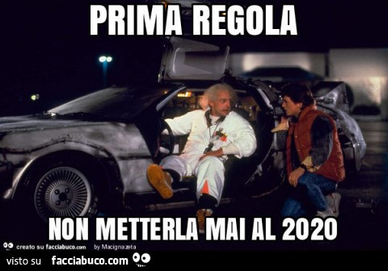

*** rumore di dietrologia cosmica ***
Zatty McFly: Ma dove siamo???
Doc Zoff: Come… non hai capito???
Zatty McFly: mmmmmmmmmmmmm……… No
Doc Zoff: Questa è la mia mitica, spettacolifica, roboante, Delorean Rudy-style. È un modello unico che con la sua carrozzeria in cartosiliconato ha un’ottima aerodinamicità nei flussi spaziotemporali quantici.
Zatty McFly: …………………………………………………………. AH!
Doc Zoff: Vedo che ancora non ci siamo, piccolo villico!
Questa è una macchina del tempo!
Zatty McFly: Un orologio con le ruote?
Doc Zoff:Sssssssssssssssssssì….. e con la possibilità di andare avanti e indietro nel tempo.
Zatty McFly: E perché sono qui?
Doc Zoff: Il Comitato Tecnico Scientifico Internazionale Supremo Anafilattico Anacronistico Anallergico e Anaffettivo, dopo lunghe e approfondite triangolazioni, ha stabilito, in modo inderogabilmente preciso, che tu sei l’unico che può salvare il mondo dal 2020!!!!
Zatty McFly: …………………………………………………………. AH! …. Bon, capît dut.
Doc Zoff: Per farlo dovrai ritornare nel passato e capire dove abbiamo sbagliato.
Zatty McFly: E cosa devo fare?
Doc Zoff:
 … e poi segui le istruzioni che troverai man mano sul tuo cammino.Zatty McFly: Ma qual è la strada?
Doc Zoff: Strada!?!?!? Dove stiamo andando non c’è bisogno di strade!
Ah…. Non dimenticare il codice
SCLAPAZOCS111